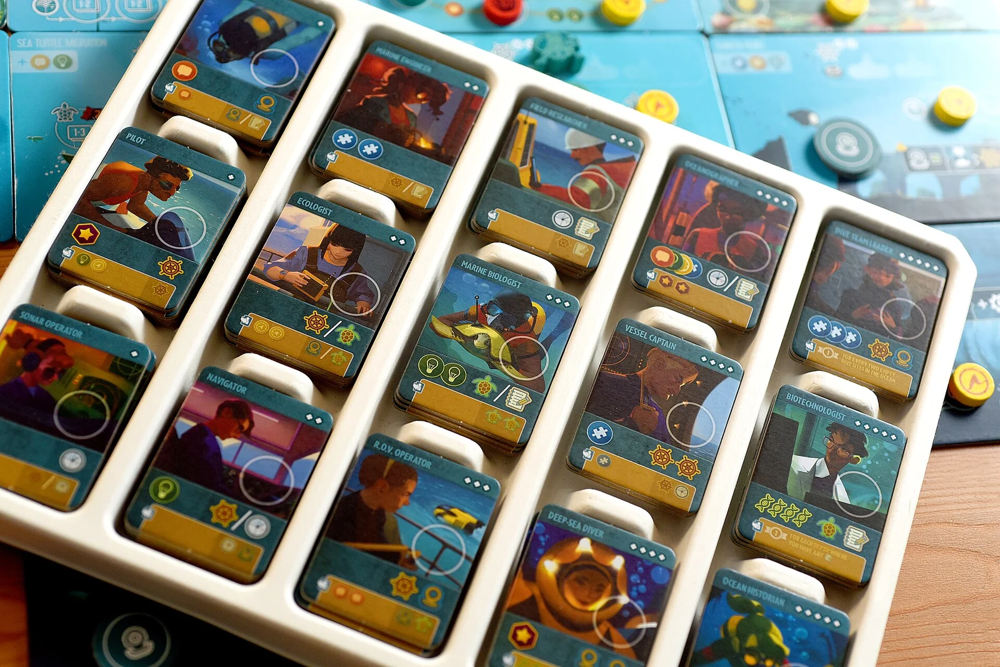
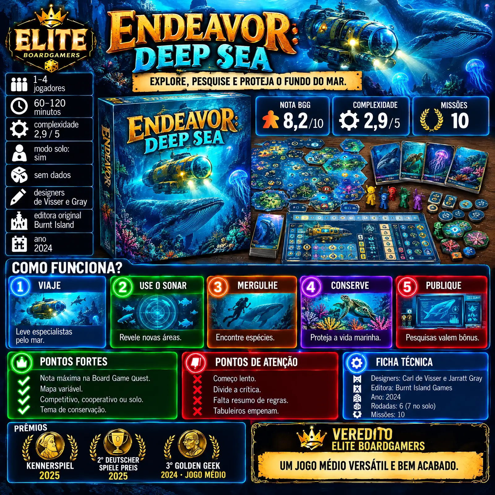
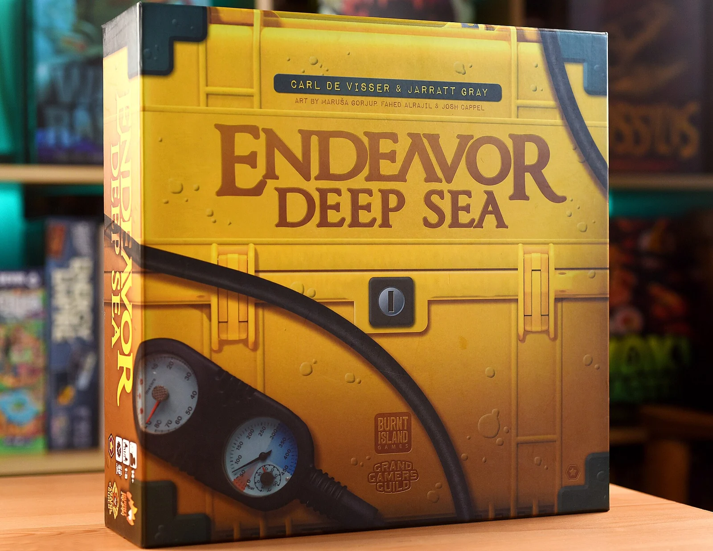

Resumo em 30 segundos
Explore, pesquise e proteja o fundo do mar.
Destaques
- Nota máxima de parte da crítica
- Mapa variável
- Três modos de jogo
Atenção
- Começo lento
- Divide a crítica
- Não é jogo de entrada
1 vitória em prêmios, incluindo Kennerspiel des Jahres 2025 · Kennerspiel des Jahres
Para quem: gosta de jogos médios de exploração; quer um jogo que funcione competitivo, cooperativo ou solo.
Como funciona
Lidere um instituto de oceanografia: explore, estude e proteja o fundo do mar em seis rodadas.
- 1
Recrute especialistas
No início de cada rodada, contrate especialistas em vida marinha e receba fichas de ação conforme suas trilhas.
- 2
Escolha as ações
Viaje, use o sonar, mergulhe, conserve ou publique. Cada ação custa fichas, e a ordem importa.
- 3
Explore o oceano
O mapa é revelado aos poucos: o sonar e as viagens abrem novas áreas e espécies a cada partida.
- 4
Estude e proteja
Mergulhos e conservação rendem pontos e fazem as trilhas do seu instituto ficarem mais fortes.
- 5
Cumpra a missão
Após seis rodadas, ou sete no solo, os pontos e a missão escolhida no início definem o resultado.
Ler as regras completas
Cada jogador lidera um instituto de oceanografia, com um tabuleiro próprio de trilhas que medem a força das suas ações. A partida tem seis rodadas, e em cada uma você recruta especialistas em vida marinha e recebe fichas de ação de acordo com a posição nas trilhas.
As ações são viajar pelo oceano, usar o sonar para revelar áreas, mergulhar para estudar espécies, conservar habitats e publicar pesquisas. Cada ação custa fichas, e a ordem importa, porque os bônus conquistados valem na hora.
O mapa do oceano é montado com peças reveladas aos poucos, então explorar abre novas áreas, espécies e oportunidades a cada partida. Estudar e proteger as espécies dá pontos e faz as trilhas do seu instituto avançarem.
Publicar no diário científico dá bônus imediatos e também bônus passivos para outros jogadores, o que cria uma interação indireta: às vezes vale publicar algo que ajuda um rival se ajudar você ainda mais. Essa troca de favores aparece em quase toda rodada.
O jogo pode ser competitivo, cooperativo ou solo, sempre com uma das 10 missões escolhida no início. No cooperativo, o grupo ganha objetivos extras e cartas de revés; no solo, joga com as regras cooperativas e uma rodada a mais.
Como é jogar
“Jogo excelente. Acerta em todos os níveis.”
Board Game Quest (tradução livre)

A Board Game Quest descreve uma rodada típica: você recruta especialistas, recebe as fichas de ação e decide a ordem. Usar o sonar antes de viajar pode revelar a área que você quer explorar; mergulhar antes de publicar pode render o bônus que paga a próxima ação. Cada pequena vantagem vale na hora, então a sequência de ações vira um quebra-cabeça a cada rodada.
Continuar lendo
As primeiras rodadas são mais lentas, como relatam resenhas no BGG, porque o instituto ainda tem poucas ações fortes. No fim, as trilhas sobem e cada turno rende muito. A Board Game Quest deu nota máxima e diz que o jogo acerta em todos os níveis; a Meeple Mountain foi mais fria, com 3,5 de 5.
O que funciona muito bem
Nota máxima de parte da crítica
Por quê?Andrea Champagne, da Board Game Quest, deu cinco estrelas, disse que o jogo acerta em todos os níveis e que era digno do Kennerspiel. A resenha elogia os ícones claros, a arte e a jogabilidade fluida e interligada.
Mapa variável
Por quê?O oceano é montado com peças reveladas aos poucos, e Justin Bell, da Meeple Mountain, elogiou a variação do mapa a cada partida. Explorar sempre traz uma surpresa, e o caminho de uma partida não se repete na seguinte.
Três modos de jogo
Por quê?Competitivo, cooperativo ou solo, com 10 missões, segundo a Wikipedia, e as mesmas regras básicas em todos, como destaca a Board Game Quest. Um único jogo serve a grupos que gostam de disputar e a grupos que preferem cooperar.
Regras ligadas ao tema
Por quê?As regras fazem sentido com o tema, então os jogadores costumam adivinhar o próximo passo, segundo a Board Game Quest. Usar o sonar para revelar áreas antes de mergulhar é o tipo de lógica que ajuda a lembrar das regras.
Tema de conservação
Por quê?Explorar e proteger o fundo do mar dá um tema diferente do habitual nos jogos médios, que costumam falar de comércio ou conquista. Aqui, os pontos vêm de estudar e preservar espécies, não de dominar territórios.
Pontos de atenção
Começo lento Moderada
Por quê?Resenhas no BGG relatam que as primeiras rodadas não empolgam, porque o instituto ainda tem poucas ações fortes. O jogo cresce a partir do meio, mas quem espera ação desde o primeiro turno pode se desanimar.
Divide a crítica Moderada
Por quê?Justin Bell, da Meeple Mountain, deu 3,5 de 5 e disse ter dificuldade de ver o que outros apreciam no design. Enquanto a Board Game Quest deu nota máxima, parte da crítica ficou menos empolgada com o vencedor do Kennerspiel.
Não é jogo de entrada Leve
Por quê?A Board Game Quest avisa que não é um jogo de entrada, apesar das regras ligadas ao tema. Com peso 2,9 de 5 no BGG, pede alguma experiência com jogos médios para render na primeira partida.
Objetivos lendários quase impossíveis Leve
Por quê?A própria Board Game Quest, mesmo com nota máxima, critica as condições de vitória lendárias, que parecem impossíveis de cumprir. Para grupos que gostam de desafio extremo no cooperativo, isso pode frustrar.
Falta resumo de regras Leve
Por quê?A Gaming Trend sentiu falta de cartas de referência para os símbolos e relatou tabuleiros de jogador empenando com o tempo. Vale guardar o jogo bem e ter o manual por perto nas primeiras partidas.
Infográfico para o Instagram
A resenha inteira em uma imagem: salve na galeria ou copie a legenda pronta.

Não colou? Toque em “Compartilhar legenda” e escolha “Copiar”, ou segure o dedo no texto acima.
Para quem é
Perfil do jogo
Com quantos jogar
- SozinhoÓtimo
Usa as regras cooperativas com uma rodada a mais, e a Board Game Quest elogia as mesmas regras em todos os modos.
- 2 ou 3 jogadoresÓtimo
Disputa equilibrada pelo mapa, com bom ritmo e menos espera entre os turnos.
- 4 jogadoresBom
Funciona, com mais competição pelas áreas do oceano e uma partida mais longa.
- Sozinho: Usa as regras cooperativas com uma rodada a mais, e a Board Game Quest elogia as mesmas regras em todos os modos.
- 2 ou 3 jogadores: Disputa equilibrada pelo mapa, com bom ritmo e menos espera entre os turnos.
- 4 jogadores: Funciona, com mais competição pelas áreas do oceano e uma partida mais longa.
É para você se…
- Gosta de jogos médios de exploração
- Quer um jogo que funcione competitivo, cooperativo ou solo
- Curte temas de natureza e ciência
- Joga às vezes sozinho e às vezes em grupo
- Gosta de mapas que mudam a cada partida
Pense duas vezes se…
- Quer empolgação desde a primeira rodada
- Busca muito confronto direto
- Está começando nos jogos modernos
- Quer pagar pouco num jogo médio
- Prefere regras sem iconografia
Dica para a primeira partida
Separe cerca de duas horas e comece com uma das missões mais simples, no modo competitivo ou cooperativo. Explique o recrutamento e as fichas de ação com uma rodada de exemplo. O que mais confunde é a ordem das ações e os bônus imediatos: mostre que um bônus pode pagar a ação seguinte. Dica prática: deixe as condições lendárias para quando o grupo já conhecer o jogo.
Edição nacional e preço
R$ 450 a R$ 650

A Ludofun publica o jogo como Endeavor: Mar Profundo, em português. Em 27/10/2026, as lojas consultadas mostravam preços entre R$ 450 (no Pix) e R$ 650, com o jogo esgotado em algumas delas. Na Ludopedia, havia um exemplar usado em inglês por cerca de R$ 510.
Expansões e versões
A edição deluxe, lançada lá fora, leva o jogo a até cinco jogadores e traz componentes melhorados. A caixa base já tem 10 missões e três modos de jogo, competitivo, cooperativo e solo, o que dá bastante variedade sem expansão.
Se você gosta de Endeavor: Deep Sea…
 Ark NovaTambém é sobre conservação de animais, mas bem mais pesado e longo, com um zoológico para montar e 212 cartas.Ler a resenha →
Ark NovaTambém é sobre conservação de animais, mas bem mais pesado e longo, com um zoológico para montar e 212 cartas.Ler a resenha → WingspanPara quem gostou do tema de natureza e quer algo mais leve e bonito, com aves e um motor de cartas em cerca de uma hora.Ler a resenha →
WingspanPara quem gostou do tema de natureza e quer algo mais leve e bonito, com aves e um motor de cartas em cerca de uma hora.Ler a resenha → Lost Ruins of ArnakOutro jogo médio de exploração de um mapa desconhecido, com construção de baralho, guardiões a vencer e um templo perdido.Ler a resenha →
Lost Ruins of ArnakOutro jogo médio de exploração de um mapa desconhecido, com construção de baralho, guardiões a vencer e um templo perdido.Ler a resenha →
Veredito Elite Boardgamers
RecomendadoEndeavor: Deep Sea é um jogo médio versátil e bem acabado: o mapa revelado aos poucos muda cada partida, as regras fazem sentido com o tema e um único jogo funciona como competitivo, cooperativo ou solo. A Board Game Quest deu nota máxima e o Kennerspiel confirmou. O começo é lento, parte da crítica não se empolgou e não é um jogo de entrada. Com edição da Ludofun entre R$ 450 e R$ 650, vale para quem gosta de exploração e de jogos médios com tema de natureza.
Explore, pesquise e proteja o fundo do mar.
Continue lendo
Outras resenhas de jogos premiados da Elite Boardgamers.
 ScytheRecomendado
ScytheRecomendado Colt ExpressRecomendado
Colt ExpressRecomendado Detective: A Modern Crime Board GamePúblico específico
Detective: A Modern Crime Board GamePúblico específico CascadiaRecomendado
CascadiaRecomendado The Lord of the Rings: Fate of the FellowshipRecomendado
The Lord of the Rings: Fate of the FellowshipRecomendado GloomhavenPúblico específico
GloomhavenPúblico específico
Gostou da resenha?
A Elite Boardgamers publica resenhas de jogos premiados todos os dias. Entre no grupo para conversar sobre jogos e siga no Instagram.
Fontes (9)
- Wikipedia – Endeavor: Deep Sea designers, editoras, regras, nota, críticas
- BoardGameGeek – Deluxe Edition peso, jogadores
- Board Game Quest – Endeavor: Deep Sea elogio
- Meeple Mountain – Endeavor: Deep Sea mapa, crítica
- BGG – Endeavor Deep Sea Review começo lento
- BoardGameGeek – edição em português edição nacional
- Ludopedia – Endeavor: Mar Profundo edição nacional
- Ludostation – Endeavor: Mar Profundo preço de referência
- Cangaia Jogos – Endeavor: Mar Profundo preço de referência
Consulta às fontes em 26/10/2026.